전기철도산업기사 (2010-07-25 기출문제)
1과목: 전기자기학
1. 주파수가 100[MHz]인 전자파가 비투자율 μr=1, 비유전율 εr=36인 물질 속에서 전파할 경우 파장[m]은? (단, 감쇄정수 a=0이다.)
- 0.5[m]
- 1[m]
- 1.5[m]
- 2[m]
(정답률: 알수없음)

2. 평면도체 표면에서 d[m]의 거리에 점전하 Q[C]RK 있을 때 이 전하를 무한원까지 운반하는데 요하는 일[J]은?
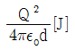
- .
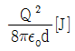
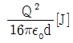
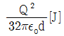
(정답률: 알수없음)
3. 투자율이 다른 두 자성체의 경계면에서 굴절각과 입사각의 관계가 옳은 것은? (단, μ: 투자율, θ1: 입사각, θ2: 굴절각)
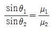
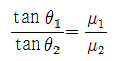
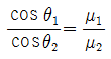
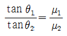
(정답률: 알수없음)
4. 그림과 같이 길이 ℓ1[m], 폭 ℓ2[m]인 직사각 코일이 자속 밀도 B[Wb/m2]인 평등 자계내에 코일면의 법선이 자계의 방향과 θ각으로 놓여 있다. 코일에 흐르는 전류가 I[A]이면 코일에 작용하는 회전력은 몇 [N·m] 인가? (단, 코일의 권수는 n 이다.)
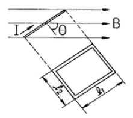
- n BIℓ1ℓ2 sinθ
- n BIℓ1ℓ2 cosθ
- n BI2ℓ1ℓ2 sinθ
- n BI2ℓ1ℓ2 cosθ
(정답률: 알수없음)
5. 유전체 중의 전계의 세기를 E, 유전률을 ε이라 하면 전기 변위는?
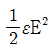
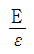
- εE2
- εE
(정답률: 알수없음)
6. 기전력 V[V], 내부저항 r[Ω]인 전지에 전열기를 연결했을 때 전열기의 발열을 최대로 낼 수 있는 최대 전력[W]은?
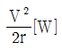
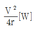
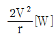
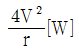
(정답률: 알수없음)
7. 쌍극자 자기 모멘트를 이용하면 자화율과 절대 온도의 관계는 어떠한가?
- 항상 같다.
- 비례한다.
- 반비례한다.
- 관계가 없다.
(정답률: 알수없음)
8. 지름 10cm인 원형코일 중심에서의 자계가 1000A/m 이다. 원형코일이 100회 감겨있을 때, 전류는 몇 [A]인가?
- 1[A]
- 2[A]
- 3[A]
- 5[A]
(정답률: 알수없음)
9. 구의 입체각은 몇 스테라디안[sr:steradian]인가?
- π[sr]
- 2π[sr]
- 4π[sr]
- 8π[sr]
(정답률: 알수없음)
10. 한 금속에서 전류의 흐름으로 인한 온도 구배부분의 줄열 이외의 발열 또는 흡열에 관한 현상은?
- 펠티에 효과(Peltier effect)
- 볼타 법칙(Volta law)
- 지벡 효과(Seebeck effect)
- 톰슨 효과(Thomson effect)
(정답률: 알수없음)
11. 전자파의 진행 방향은?
- 전계 E의 방향과 같다.
- 자계 H의 방향과 같다.
- E×H의 방향과 같다.
- ∇×E의 방향과 같다.
(정답률: 알수없음)
12. 10μF의 콘덴서를 100V로 충전한 것을 단락시켜 0.1ms에 방전시켰다고 하면 평균전력은 몇 [W]인가?
- 450[W]
- 500[W]
- 550[W]
- 600[W]
(정답률: 알수없음)
13. 그림 (a)의 인덕턴스에 전류가 그림 (b)와 같이 흐를 때 2초에서 6초사이의 인덕턴스 전압 VL은?
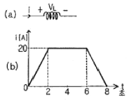
- 0[V]
- 5[V]
- 10[V]
- 20[V]
(정답률: 알수없음)
14. 두 개의 자력선이 동일한 방향으로 흐르면 자계의 강도는 한 개의 자력선에 비하여 어떻게 되는가?
- 더 약해진다.
- 주기적으로 약해졌다 또는 강해졌다 한다.
- 더 강해진다.
- 강해졌다가 약해진다.
(정답률: 알수없음)
15. 거리 r에 반비례하는 전계의 크기를 주는 대전체는?
- 점전하
- 선전하
- 구전하
- 무한평면전하
(정답률: 알수없음)
16. 6.28A가 흐르는 무한장 직선도선상에서 1m 떨어진 점의 자계의 세기[A/m]는?
- 0.5[A/m]
- 1[A/m]
- 2[A/m]
- 3[A/m]
(정답률: 알수없음)
17. 정전용량이 C인 콘덴서에서 근판사이의 비유전율이 2인 유전체를 제거하고 공기로 채운 경우 그 때의 용량을 Co라고 하면, C와 Co의 관계는?
- C=2Co
- C=4Co
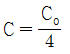
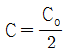
(정답률: 알수없음)
18. 무한히 넓은 평행판 콘덴서에서 두 평행판 사이의 간격이 d[m]일 때 단위 면적당 두 평행판사이의 정전용량[F/m2]은? (단, 매질은 공기이다.)
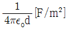
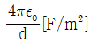
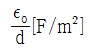
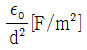
(정답률: 알수없음)
19. 암페어의 주회적분의 법칙은 직접적으로 다음의 어느 관계를 표시하는가?
- 전하와 전개
- 전류와 인덕턴스
- 전류와 자계
- 전하와 전위
(정답률: 알수없음)
20. 공기 중에 10cm 떨어져 평행으로 놓여 진 두 개의 무한히 긴 도선에 왕복전류가 흐를 때 단위 길이 당 0.04N의 힘이 작용한다면 이 때 흐르는 전류는 약 몇 [A]인가?
- 58[A]
- 62[A]
- 83[A]
- 141[A]
(정답률: 알수없음)
2과목: 전력공학
21. 송전선로의 단락보호계전방식이 아닌 것은?
- 과전류계전방식
- 방향단락계전방식
- 거리계전방식
- 과전압계전방식
(정답률: 알수없음)
22. 차단기에서 “O-t1-CO-t2-CO“의 표기로 나타내는 것은? (단, O: 차단 동작, t1,t2: 시간 간격, C: 투입 동작, CO: 투입 직후 차단)
- 차단기 동작 책무
- 차단기 재폐로 계수
- 차단기 속류 주기
- 차단기 무전압 시간
(정답률: 알수없음)
23. 설비 용량의 합계가 3kW인 주택에서 최대 수요 전력이 2.1kW일 때의 수용률은?
- 51[%]
- 58[%]
- 63[%]
- 70[%]
(정답률: 알수없음)
24. 중성점 저항 접지방식의 병행 2회선 송전선로의 지락사고 차단에 사용되는 계전기는?
- 선택접지계전기
- 거리계전기
- 과전류계전기
- 역상계전기
(정답률: 알수없음)
25. 화력발전소의 기본 사이클이다. 그 순서가 올바른 것은?
- 급수펌프→과열기→터빈→보일러→복수기→다시 급수 펌프로
- 급수펌프→보일러→과열기→터빈→복수기→다시 급수 펌프로
- 보일러→과열기→복수기→터빈→급수펌프→축열기→다시 과열기로
- 보일러→급수펌프→과열기→복수기→급수펌프→다시 보일러로
(정답률: 알수없음)
26. 송전선로의 안정도 향상 대책으로 볼 수 없는 것은?
- 속응여자방식을 채용한다.
- 재폐로방식이나 복도체방식을 채용한다.
- 단락비가 작은 발전기를 사용한다.
- 고속차단기를 사용한다.
(정답률: 알수없음)
27. 피뢰기의 제한전압이란?
- 상용주파수의 방전개시전압
- 충격파의 방전개시전압
- 충격반전 종료 후 전력계통으로부터 피뢰기에 상용 주파수 전류가 흐르고 있는 동안의 피뢰기 단자전압
- 충격방전전류가 흐르고 있는 동안의 피뢰기의 단자 전압의 파고값
(정답률: 알수없음)
28. 3상3선식 송전선을 연가 할 경우 일반적으로 전체 선로 길이의 몇 배수로 등분해서 연가 하는가?
- 2
- 3
- 4
- 5
(정답률: 알수없음)
29. 1선당 저항 5Ω, 리액턴스가 6Ω인 3상 4선식 배전선로의 말단(수전단)에 역율(지상) 0.8인 4800kW의 3상 평형부하가 접속되어 있을 경우 수전단 전압이 20kV라면 이 선로의 전압 강하[V]는 약 얼마인가?
- 1316[V]
- 1824[V]
- 2280[V]
- 3160[V]
(정답률: 알수없음)
30. 430mm2의 ACSR(반지름 r=14.6mm)이 그림과 같이 배치되어 완전 연가 된 송전선로가 있다. 인덕턴스는 약 얼마정도 인가? (단, 지표상의 높이는 이도의 영향을 고려한 것이다.)
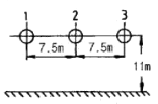
- 1.34[mH/km]
- 1.39[mH/km]
- 1.44[mH/km]
- 1.49[mH/km]
(정답률: 알수없음)
31. 원자로에서 독자용을 올바르게 설명한 것은?
- 열중성자가 독성을 받는 것을 말한다.
- 방사성 물질이 생체에 유해작용을 하는 것을 말한다.
- 열중성자 이용률이 저하되고 반응도가 감소되는 작용을 말한다.
- 54Xe135와 62Sm149가 인체에 독성을 주는 작용을 말한다.
(정답률: 알수없음)
32. 소호리액터의 탭이 공진점을 벗어나고 있는 정도를 나타내는데 합조도라는 용어가 사용된다. 합조도가 정(+)이 되는 상태를 나타낸 것은?
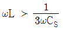
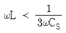
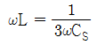
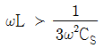
(정답률: 알수없음)
33. 전등 부하에 공급하고 있는 그림 A, D와 같은 단상 2선식 저압 배전 간선이 있다. A, B, C, D의 각 점의 부하전류 및 각 부하점의 거리는 그림에 표시한 바와 같다. 이 저압 간선 중의 한 점 F에서 공급되는 것으로 하고 FA 및 FD 간의 전압강하를 동일하게 하는 F점의 위치를 구하면? (단, 전선의 굵기는 AD간을 전부 같게 하고, 또 전선의 리액턴스를 무시한다.)
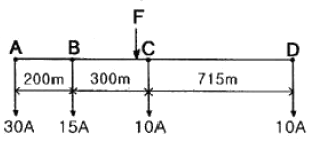
- B 에서 C 방향으로 80m인 지점
- B 에서 C 방향으로 90m인 지점
- B 에서 C 방향으로 100m인 지점
- B 에서 C 방향으로 110m인 지점
(정답률: 알수없음)
34. 조상설비라고 볼 수 없는 것은?
- 단권변압기
- 분로리액터
- 전력용콘덴서
- 동기조상기
(정답률: 알수없음)
35. 총단면적이 같은 경우 단도체와 비교해 볼 때 복도체의 이점으로 옳지 않은 것은?
- 정전용량이 증가한다.
- 안정도가 증가한다.
- 송전전력이 증가한다.
- 코로나 임계전압이 낮아진다.
(정답률: 알수없음)
36. 송전선로에서 역섬락이 생기기 가장 쉬운 경우는?
- 선로 손실이 큰 경우
- 코로나 현상이 발생한 경우
- 선로정수가 균일하지 않을 경우
- 철탑의 탑각 접지 저항이 큰 경우
(정답률: 알수없음)
37. 적산 유량곡선상의 임의의 점에서 그은 절선의 기울기는 그 점에서 해당하는 일자에 있어서의 무엇을 표시하는가?
- 하천 유량
- 적산 유량
- 하천 수위
- 사용 유량
(정답률: 알수없음)
38. 단락전류를 제한하기 위하여 사용되는 것은?
- 현수애자
- 사이리스터
- 한류리액터
- 직렬콘덴서
(정답률: 알수없음)
39. 비접지식 송전선로에서 1선지락 고장이 생겼을 경우 지락점에 흐르는 전류는?
- 직류 전류이다.
- 고장 지점의 영상전압보다 90도 빠른 전류이다.
- 고장 지점의 영상전압보다 90도 늦은 전류이다.
- 고장 지점의 영상전압과 동상의 전류이다.
(정답률: 알수없음)
40. 송전선로의 코로나 발생을 방지하는 대책으로 가장 효과적인 방법은?
- 전선의 선간거리를 증가시킨다.
- 선로의 대지절연을 강화한다.
- 철탑의 접지저항을 낮게 한다.
- 전선을 굵게 하거나 복도체를 사용한다.
(정답률: 알수없음)
3과목: 전기철도공학
41. 운전최고속도가 45[km/h]정도인 축선로에서 레일면에 대한 전차선 구배의 한도는?
- 3/1000 이하
- 5/1000 이하
- 10/1000 이하
- 15/1000 이하
(정답률: 알수없음)
42. 다음 중 SCADA 시스템의 기능이 아닌 것은?
- 원격감시
- 원방제어
- 원방계측
- 원격보수
(정답률: 알수없음)
43. 직선구간에서 가공전차선의 편위는 좌우 몇[mm] 이내를 표준으로 하는가? (단, 전차선의 편위는 오버랩이나 분기구간 등 특수구간 제외)
- 100
- 150
- 200
- 300
(정답률: 알수없음)
44. 교류전차선로 BT급전방식에서 단독급전인 경우 흡상변압기는 몇 [km] 간격으로 설치하는가?
- 3
- 4
- 5
- 6
(정답률: 알수없음)
45. 강체전차선로(R-Bar방식)에서 가공전차선로의 인류장치와 같은 역할을 하는 것은?
- 제한점
- 경계점
- 한계점
- 고정점
(정답률: 알수없음)
46. 우리나라 전차선로 가선방식중 전차선을 170[mm2]로 사용하고 있는 조가 방식은?
- 심플 커티너리
- 헤비심플 커티너리
- 콤파운드 커티너리
- 강체가선 방식
(정답률: 알수없음)
47. 직류 급전방식에 대한 설명으로 틀린 것은?
- 운전전류가 커서 장거리나, 산악지역 수송에 유리하다.
- 운전전류가 커서 누설전류에 의한 전식(電蝕)대책이 필요하다.
- 전압이 낮아 절연계급을 낮출 수 있다.
- 통신유도장해가 거의 없다.
(정답률: 알수없음)
48. 일반전기철도에서 가동브래킷 구간(A) 및 고정 빔 구간(B)의 표준 가고는?
- A: 960mm, B: 710mm
- A: 900mm, B: 600mm
- A: 690mm, B: 710mm
- A: 960mm, B: 590mm
(정답률: 알수없음)
49. 변Y형 심플 커티너리 조가방식에서 Y선에 대한 설명으로 옳은 것은?
- 지지점 부근의 압상량을 작게 한다.
- 양 지지점 아래에서의 팬터그래프 통과에 대한 경점을 증가시킨다.
- 경간 중앙부와 압상량의 차이를 크게 한다.
- 이선 및 아크를 작게 하여 속도 성능을 향상시킨다.
(정답률: 알수없음)
50. 지락고장 검출이 용이하고 이상전압 도래시 대지로 방전시키는 계통의 보호방식이 아닌 것은?
- 매설지선에 의한 방식
- 보호선(PW)에 의한 방식
- 절연이격에 의한 방식
- 가공지선(GW)에 의한 방식
(정답률: 알수없음)
51. BT 전철 변전소에서 전압보상과 무효전력을 경감하기 위한 설비는?
- 흡상변압기
- 단권변압기
- 전력용콘덴서
- 정류기용 변압기
(정답률: 알수없음)
52. 직류 강체 T-bar 방식 전차선로에서 익스팬션 조인트 개소의 T-bar 상호간격은 몇 [mm]를 표준으로 하는가?
- 100
- 150
- 200
- 300
(정답률: 알수없음)
53. 다음 중 전기철도 운행구간에서 발생하는 전식에 대한 방지대책으로 사용되는 방식이 아닌 것은?
- 직접 배류방식
- 전력 배류방식
- 선택 배류방식
- 강제 배류방식
(정답률: 알수없음)
54. 전기철도에서 집전장치에 대한 설명으로 옳은 것은?
- 공기저항이 커야 한다.
- 팬터그래프 수를 최대화 한다.
- 이선율을 크게 한다.
- 소음이 적어야 한다.
(정답률: 알수없음)
55. 우리나라 교류 전기철도 변전소의 주변압기 결선방식은?
- △-Y 결선 방식
- △-△ 결선 방식
- Y-Y 결선 방식
- 스코트 결선 방식
(정답률: 알수없음)
56. 교류급전방식에서 주변압기(스코트결선) T상의 1차 전류(I1) 값은 약 몇 [A]인가? (단, 1차전압(E1) 66[kV], 2차전압(E2) 25[kV], 2차전류(I2) 200[A]라 한다.)
- 87.4[A]
- 97.4[A]
- 107.1[A]
- 117.2[A]
(정답률: 알수없음)
57. 전기차 집전장치의 전차선 집전특성을 판단하는 방법이 아닌 것은?
- 이선율
- 탈선율
- 탄성률
- 비균일률
(정답률: 알수없음)
58. AT급전방식에서 섬락보호를 위하여 애자의 부측 또는 비임등을 연결하여 귀선레일에 접속하는 가공전선은?
- 전차선
- 보호선
- 급전선
- 가공지선
(정답률: 알수없음)
59. 전차선의 단위중량을 2.0(kg/m), 선로 구배 25/1000, 구배연장 1600m로 하는 경우 전차선이 받는 외력[kgf]은?
- 40
- 60
- 80
- 160
(정답률: 알수없음)
60. 급전계통의 구성시 고려되어야 할 사항이 아닌 것은?
- 전압강하
- 사고시의 구분
- 보호계전기의 보호범위
- 차량특성
(정답률: 알수없음)
4과목: 전기철도구조물공학
61. 전차선로에 사용되는 콘크리트주의 종류는?
- 1종
- 2종
- 3종
- 4종
(정답률: 알수없음)
62. 전주 기초의 터파기를 할 때 흙막이 틀을 사용하는 여부에 따라 토양과 기초재의 접촉면에서 발생하는 강도의 차를 보정하여 주는 계수는?
- 지형계수
- 강도계수
- 안전계수
- 형상계수
(정답률: 알수없음)
63. 전주의 사용목적에 의한 구분에서 보통 방식, 브래킷식등에서 사용하는 전주형은?
- A형
- B형
- C형
- D형
(정답률: 알수없음)
64. 25[kV] 전차선로에 사용하는 플리머제 지지애자의 호칭 표시 방법은?
- 애자 높이와 기호로 표시
- 애자 지름과 기호로 표시
- 절연 계급과 기호로 표시
- 사용 전압과 기호로 표시
(정답률: 알수없음)
65. 작업원의 중량은 응력계산에서 어떤 하중으로 하는가?
- 수평집중하중
- 수평분포하중
- 수직편심하중
- 수직분포하중
(정답률: 알수없음)
66. 일반적인 4각 철주의 경우 복경사재일 때 경사재의 중복수 n은?
- 1
- 2
- 3
- 4
(정답률: 알수없음)
67. 바리니온(Varignon) 정의를 맞게 설명한 것은?
- 여러힘의 한점에 대한 모멘트의 대수의 합은 항상 일정하다.
- 여러힘의 한점에 대한 모멘트의 대수의 합은 0이다.
- 여러힘의 한점에 대한 모멘트의 대수합은 그 합력의 그 점에 대한 모멘트와 다르다.
- 여러힘의 한점에 대한 모멘트의 대수합은 그들 합력의 그점에 대한 모멘트와 같다.
(정답률: 알수없음)
68. 빔의 중량이 가볍고 건설비가 저렴하나 온도변화에 의한 조정이 필요하며 보수점검이 어려운 단점을 가진 빔은?
- 가동브래킷빔
- 고정브래킷빔
- 고정운형빔
- 스팬선식빔
(정답률: 알수없음)
69. 축방향으로 인장력이나 압축력을 받는 1차원 구조물은?
- 쉘(shell)
- 플레이트(plate)
- 봉(rod)
- 곡선 보(curvel beam)
(정답률: 알수없음)
70. 전기철도구조물 계산시 기본도형의 도심위치가 틀린 것은?
- 반지름이 r[cm]인 반원의 도심위치
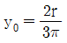
이다. - 장방형이나 평행사변형의 도심위치
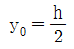
이다. - 삼각형의 도심위치
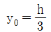
이다. - 원의 도심위치
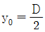
이다.
(정답률: 알수없음)
71. 지선(支線)의 사용개소가 아닌 곳은?
- 인류 개소
- 직선 개소
- 진동 개소
- 곡선 개소
(정답률: 알수없음)
72. 교류 전기철도에서 부급전선에 사용되는 설비로서 흡상변압기의 단자 구분 개소에 사용하는 180[mm]현수애자의 수는 일반적인 경우 몇 개를 사용하는가?
- 2
- 4
- 6
- 8
(정답률: 알수없음)
73. 가공전차선로에 사용하는 애자의 종류가 아닌 것은?
- 현수애자
- 장간애자
- 지지애자
- 핀애자
(정답률: 알수없음)
74. 길이가 8[m]인 각주에 하중을 가해서 변형율이 0.0004가 되었다면 신장량은?
- 0.16[cm]
- 0.26[cm]
- 0.32[cm]
- 0.46[cm]
(정답률: 알수없음)
75. 조합철주의 경사재로서 경사재의 수평면에 대한 경사각도는 단경사재인 경우 몇 도로 하는가?
- 30
- 40
- 50
- 60
(정답률: 알수없음)
76. 그림에서 힘 P1, P2의 합력은 몇 [t]인가?
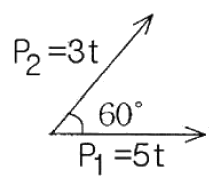
- 7
- 9
- 11
- 13
(정답률: 알수없음)
77. 힘의 3요소가 아닌 것은?
- 크기
- 방향
- 시간
- 작용점
(정답률: 알수없음)
78. 전기철도에서 구조물 계산시 단독 지지주로 취급하지 않는 것은?
- 스팬선비임 지지주
- 하수강 지지주
- 크롯비임 지지주
- 고정브래킷 지지주
(정답률: 알수없음)
79. 단독지지주에서 지지점의 높이가 L[m]인 전선에 수평집중 하중 P[kgf]가 작용하는 경우 h점의 모멘트 Mh은? (단, L ＞ h이다.)
- Mh=P
- Mh=P×L
- Mh=P(L-h_
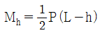
(정답률: 알수없음)
80. 선로의 곡선 조건에 다라 합성 전차선을 당기거나 밀어 주어 편위를 조정하는 역할을 하는 것은?
- 가동브래킷
- 크로스 빔
- 라멘
- 트러스
(정답률: 알수없음)
물질 속에서 전파할 경우 파장은 파동의 속도가 물질 속에서 감소하기 때문에 짧아진다. 이 때 파장은 λ' = λ/√(εrμr)로 계산할 수 있다. 따라서 주어진 비투자율 μr=1, 비유전율 εr=36인 물질 속에서의 파장은 λ' = 3/√(1×36) = 0.5[m]이다.
따라서 정답은 "0.5[m]"이다.